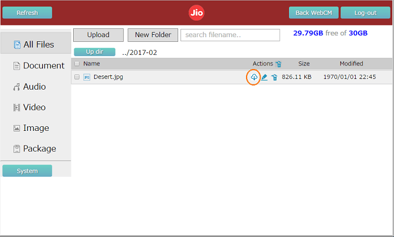

Storage Mode
1. Local Storage
- SD card will set as USB drive and be access for local Laptop only.
Notice: Is not possible to Internet tethering via USB.
2. WI-FI Storage
- SD card can be access over Wi-Fi.
WI-FI Disk
- Wirelessly access your content, no internet required.
Other Wi-Fi enabled devices: a web browser
1. Supported File formats
- The file formats supported by Wi-Fi Disk are as follows:-
| File Items | Description |
|---|---|
| Document | ".doc"," .txt",".ppt",".xls",".pdf" |
| Image | ".jpg",".bmp",".png",".gif",".jpeg" |
| Audio | ".wav",".mp3" |
| Video | ".avi",".mp4",".rmvb",".mpg" |
| Package | ".rar",".zip" |
2. Upload Files
- Click Upload button on the WI-FI Disk main
- Click Browse button and Select the file you want to upload to SD card.
- Click Start
- You can find the uploaded file, When the upload is finished and the close button is pressed. Note: The file will be uploaded to the folder created automatically with named rule Year-Month, if you are locating root directory.
3. Download File
- Select the file you want to download. Click on the download icon on the file list.

4. New Folder
- Click New Folder.
- Type in the desired name of the new folder.

5. Search the File
- Type the name to search into the search textbox. And press Enter.
- It will be displayed all files, including search filename.
6. Rename the File or Folder
- Select the file or folder you want to change the name. Click on the rename icon on the file list.
- Type in the desired name of the file or folder. And press the enter.
7. Delete the File or Folder
- Select the file or folder you want to remove. Click on the delete icon on the file list.
- Select the checkbox you want to remove the files or folder and Cleck on the deletes icon.
8. SD capacity status
- You can find the SD capacity and Free capacity .
9. Format SD Card
- Click System button.
- It will be displayed SD card status includeing SD Capacity and Free Capacity.
- Click Format button.
FAQs
Insert or Remove the MicroSD Card
- Open the back cover on the device.
- Gently slide the SD tray downwards.
- Lift the tray to carefully place the MicroSD card. Make sure it is placed properly with the chip facing down.
- Slide the tray upwards to lock and secure the tray.
- Close the back cover.
- Case of the Remove the microSD Card, Reverse the oder of the insert.

if WiFi Disk doesn't work?
- Check whether the MicroSD card is inserted correctly.
- Check whether the MicroSD card is working properly.
- Check the mode which has been set under Storage settings.
- Supported format type FAT32